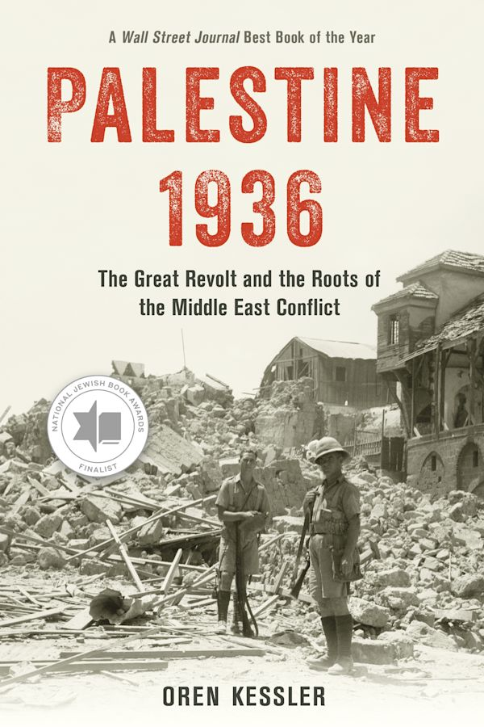
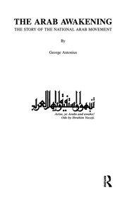

14:14 · 2 OPERE
Palestina 1936. La grande rivolta araba e le radici del conflitto contro Israele.
Il filo del discorso
La recensione di Palestine 1936 di Oren Kessler propone di leggere il conflitto mediorientale attraverso la rivolta araba del 1936–1939. Dr Divago presenta il volume e si sofferma sul Mandato britannico, su Amin al-Husseini e sul confronto fra rappresentanza comune e partizione. Un’ampia sezione discute The Arab Awakening di George Antonius: il relatore ne contesta l’interpretazione del nazionalismo arabo e il linguaggio usato per l’immigrazione ebraica. Il finale torna alla Commissione Peel, alla costruzione delle narrazioni storiche e al valore attribuito alla lettura come risposta alla propaganda. Il collegamento con gli eventi contemporanei è parte della posizione politica del recensore.
I libri nel discorso

Palestine 1936. The Great Revolt and the Roots of the Middle East Conflict
Copertina: Rowman & Littlefield · hardback · 2023
Immagine autentica dell’opera, controllata visivamente; l’edizione di riferimento non è attribuita al filmato.
Oren Kessler, titolo inglese e uscita nel 2023 annunciati; titolo ripetuto nel finale.
Passaggio 1:01 ↗ · Fonti e libro ↗
The Arab Awakening. The Story of the Arab National Movement
Copertina: Routledge · ristampa: The Story of the National Arab Movement
Immagine autentica dell’opera, controllata visivamente; l’edizione di riferimento non è attribuita al filmato.
George Antonius, titolo e data 1938 annunciati prima della lettura di un passaggio.
Passaggio 4:58 ↗ · Fonti e libro ↗